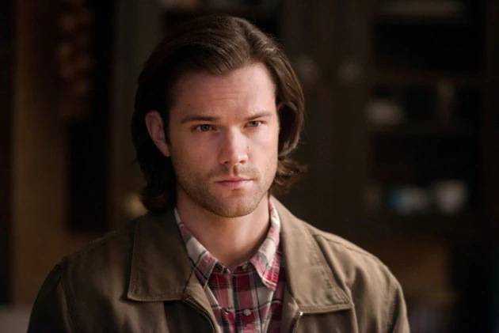

NOTICIA 1
El titular aleatorio
La historia sigue a Sam y Dean Winchester, dos hermanos que viajan por los Estados Unidos cazando criaturas paranormales, como demonios, fantasmas, monstruos y otras entidades sobrenaturales. La serie comienza con la desaparición de su padre, John Winchester, quien era un cazador de lo sobrenatural. Los hermanos siguen su legado y se embarcan en una misión para resolver misterios y proteger a la humanidad de amenazas sobrenaturales.
A lo largo de la serie, los hermanos se enfrentan a una serie de enemigos poderosos y enfrentan situaciones complicadas. Además de los monstruos clásicos, también se topan con figuras mitológicas y religiosas, como ángeles, demonios, y criaturas basadas en leyendas y mitos.
Temas principales:
Familia: La relación entre Sam y Dean es el núcleo emocional de la serie, y muchas de las decisiones y sacrificios de los personajes están motivados por el amor y la lealtad familiar.
Sacrificio: A lo largo de la serie, los hermanos deben tomar decisiones difíciles y sacrificarse por el bien común.
Destino y libre albedrío: Los personajes luchan contra su destino, ya sea como "elegidos" para enfrentar el mal o el destino de sus propios poderes.
Bien contra mal: A lo largo de la serie, los hermanos luchan contra las fuerzas del mal, pero también cuestionan el concepto de lo que es "bueno" y "malo".
"Sobrenatural" es una serie que mezcla acción, terror, comedia y drama con una rica mitología basada en leyendas, religiones y folclore. Con una base de seguidores leales, es conocida por sus personajes entrañables, su humor oscuro y las complejas historias que exploran los límites de lo sobrenatural.
Castiel personaje Sobrenatural
NOTICIA 2
El titular aleatorio
En estas temporadas, los hermanos se enfrentan a nuevos desafíos,
incluyendo los problemas con la humanidad y la creación de una
nueva fuente de poder sobrenatural. La batalla contra los enemigos
se vuelve más personal y peligrosa.

Castiel personaje Sobrenatural
NOTICIA 3
El titular aleatorio
En estas temporadas, los hermanos se enfrentan a nuevos desafíos,
incluyendo los problemas con la humanidad y la creación de una
nueva fuente de poder sobrenatural. La batalla contra los enemigos
se vuelve más personal y peligrosa.

Castiel personaje Sobrenatural